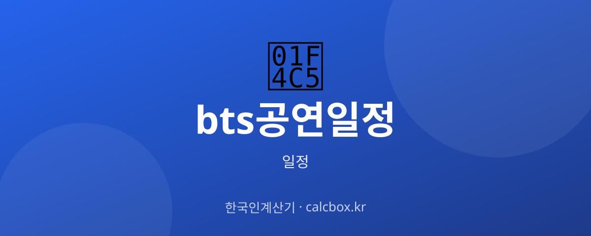

BTS 공연 일정 확인법 — 콘서트·이벤트 일정과 예매 챙기는 법
전 세계가 주목하는 방탄소년단(BTS). 공연·콘서트 일정을 어디서 확인하고, 티켓 예매는 어떻게 준비하는지 방법 중심으로 정리했습니다.

BTS(방탄소년단) 일정, 무엇을 확인하나요?
확인 대상은 단독 콘서트, 팬미팅, 각종 시상식·페스티벌 출연, 온라인 라이브 등입니다. 오프라인 공연은 도시·회차별로 날짜와 장소가 정해집니다.
공연 정보의 핵심은 두 가지입니다. 하나는 공연 날짜·장소이고, 다른 하나는 그보다 먼저 챙겨야 하는 티켓 예매(티켓 오픈) 일정입니다. 인기 공연은 예매 경쟁이 치열해 예매일 확인이 특히 중요합니다.
최신 일정 확인하는 법
가장 정확한 곳은 소속사·아티스트 공식 채널입니다. 공연 개최와 예매 일정은 공식 공지로 처음 발표됩니다.
공연이 확정되면 예매처의 상세 페이지에서 회차·좌석·가격과 티켓 오픈 시간이 안내됩니다. 팬클럽 선예매와 일반 예매가 나뉘는 경우가 많으니 각 오픈 시간을 따로 확인하세요.
- BTS/소속사 공식 홈페이지·SNS·팬 플랫폼(위버스 등)
- 예매처(멜론티켓/인터파크/예스24 등)
- 네이버 등 포털 공연 정보
중계·관람·예매 정보
티켓 오픈은 정해진 시간에 동시 접속이 몰립니다. 예매처 회원 가입·본인 인증·결제 수단을 미리 준비하고, 서버 시간에 맞춰 대기하는 것이 좋습니다.
해외 공연은 현지 예매처를 통해 판매되기도 하고, 온라인 라이브는 스트리밍 플랫폼에서 별도 관람권을 판매합니다. 공연 형태에 따라 예매 경로가 다릅니다.
알아두면 좋은 포인트
멤버들의 활동 상황에 따라 완전체·유닛·솔로 공연이 나뉠 수 있습니다. 어떤 형태의 공연인지 공지를 확인하세요.
암표·비공식 판매는 취소·입장 거부 위험이 있으니 반드시 공식 예매처를 이용하세요. 예매 취소·환불 규정도 예매 전에 확인해 두면 좋습니다.
자주 묻는 질문 (FAQ)
Q. BTS 공연 일정은 어디서 가장 먼저 확인하나요?
공연 개최와 예매 일정은 소속사·아티스트 공식 채널과 팬 플랫폼에서 가장 먼저 공지됩니다. 포털이나 예매처 정보도 결국 공식 발표를 따르므로, 공식 채널 알림을 켜 두는 것이 가장 빠릅니다.
Q. 티켓 예매는 어떻게 준비하나요?
공연이 확정되면 예매처 페이지에 회차·가격·티켓 오픈 시간이 안내됩니다. 예매처 회원 가입과 본인 인증, 결제 수단을 미리 준비하고 오픈 시간에 맞춰 대기하세요. 팬클럽 선예매와 일반 예매 시간이 다를 수 있습니다.
Q. 공식이 아닌 곳에서 표를 사도 되나요?
권장하지 않습니다. 암표·비공식 거래는 입장 거부나 사기 위험이 있어, 반드시 공식 예매처를 통해 구매하고 환불·양도 규정을 확인하는 것이 안전합니다.